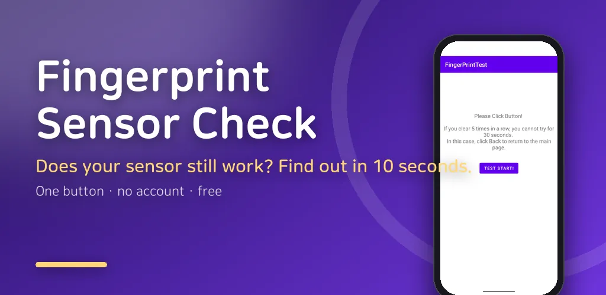
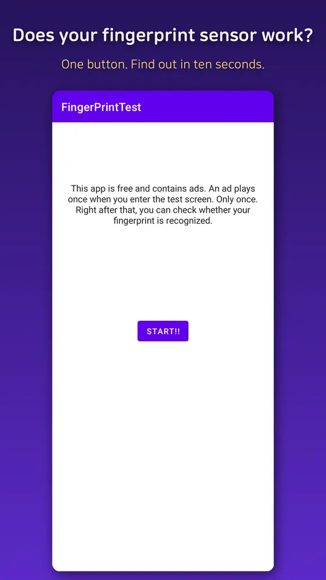
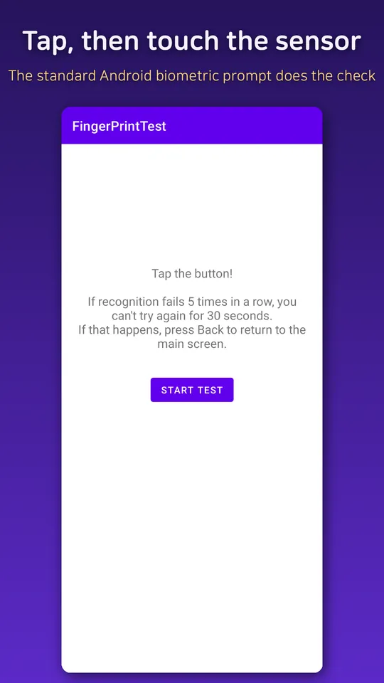
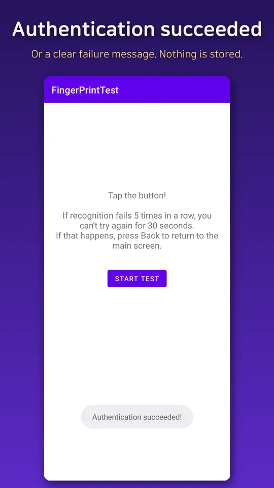
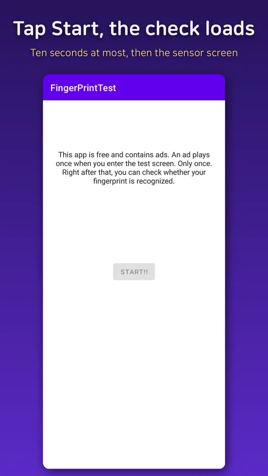

Fingerprint Test: Sensor Check
Check if your fingerprint sensor works. Test fingerprint recognition in seconds.





About this app
Is your fingerprint sensor working? Find out in seconds.
When fingerprint unlock stops working, the first question is simple: is it the sensor, or the settings? FingerPrintTest answers that with one button.
What it checks
- Whether your phone has fingerprint hardware at all
- Whether the fingerprint sensor is available right now
- Whether a fingerprint is registered on the device
- Whether your finger is actually recognized, using the standard Android biometric prompt
How to use
- Tap Start, then tap Start test
- Touch the fingerprint sensor when the prompt appears
- You see "Authentication succeeded!" or a clear failure message right away
Good to know
- If recognition fails 5 times in a row, Android locks the sensor for 30 seconds. Press Back and try again a little later.
- Nothing is stored. The app never sees or saves your fingerprint. Android does the check and only reports success or failure.
- No account and no extra permissions.
- Check whether it is really a sensor fault before cleaning, recalibrating or repairing your fingerprint sensor.
Ads
- The app is free and contains ads.
Android · free with ads · Developer: RealTunaLove · Store listing in 19 languages